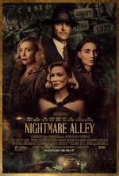
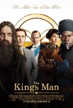

The new film from Paul Thomas Anderson is an absoluet delight. Starting Alana Haim and Cooper Hoffman, this film is a coming of age love story at heart.
Mixed with plenty of 1970s California nostalgia, the story follows Copper Hoffman's character, a some what successful child actor as he tries to woo the older
Haim. Like most of Anderson's films this is a slow burn. It meant to wash over you and not hit you over the head. Which in todays cinema landscape is rare, and it
executed perfectly in Anderson's capable hands. The film really shines in terms of its two lead roles. With small parts from Sean Penn and Bradley Cooper, both of who
are amazing. What really shines are the two no name stars. While Alana Haim is one of the trio of sisters that makes up the popular band Haim, and Bradley Cooper is the son
of the late actor Philip Seymour Hoffman both have litte previous acting experience. However you could never tell by the performances given here. There commiment to the roles and character, as
well as there commiment to each other as there relationship builds is simply amazing to watch. After first viewing it may not top my Paul Thomas Anderson List, reserved for such
films as There Will Be Blood and Magnolia. I do think Licorice Pizza will age well, and become a film that will apperciate after multiple viewings. In the end I think it might endure,
as one of those old fashion love stories that are no longer told, about an age quickly being forgotten. Going into the film I expected a termendous amount since Paul Thomas Anderson
is one of my favorite directors, and the film did little to convice me he is not the best director currently working.
Creating Sparks Rating: 9/10
Rated R: for language, sexual material and some drug use.

The newest film from Academy Award winner Guillermo Del Toro is the follow up to the hugely successful film The Shape of Water.
Del Toro has made his name in Hollywood as one of the most creative and technically sound filmmakers around. Nightmare Alley is
no exception. Perhaps the best shot film that I have seen from 2021, the camera work, set pieces, lighting, and score work together
to create a absolutely beautiful film. In addition to this the film has an amazing cast, including stars Bradley Cooper, Cate Blanchett, and
Rooney Mara who all clock in superb performances here. The supporting cast is just as good, including roles from Willem Dafoe, Richard Jenkins,
Toni Collette, Ron Perlman, and Mary Steenburgen. The acting in this film is top notch. The only downfall is it takes some time to really get going.
At first we are introduced to Coopers character as he joins with a traveling circus in 1940's America. A man with a trouble past he quickly
joins the colorful cast of characters and fits in with the diverse group of carival workers. The second and third act take a much different turn, and without
spoiling any key plot points, I will say the transition from act 1 to act 2 seem alittle disjointed. With a rush to wrap up and bring everything to a conslusion.
However I do think this film was very good and is worth watching despite some pacing issues. Mainly because of the unique story, beautiful camera work, and
very strong performances from just about everyone in the film.
Creating Sparks Rating: 8.5/10
Rated R: for Strong/Bloody Violence, Some secual Content, Nudity and Language

The newest addition to the spy/action franchise from director Matthew Vaughn is a prequal to the first two films Kingman: The Secret Service and The Golden Circle.
While there is alot wrong with the film, the one thing it has going for it is it is very fun. In the age of mindless action and thriller The King's Man knows at it's core
that it's job is to be entertaining. While it mostly suceededs in that fact, it still works hard to be biting and relivant and leans less on the humor that made the first two
films so likeable and entertaining. Set in the early 1900s it chronicals the rise of the infamous Kingman agency from its birth in early World War I. One of the things I enjoyed
about this film is its use of real historic events within its plot structure. With characters such as Rasputin and the events that launched the first world war covered extensively
The King Man is able to blend comic book action, historic events, and strong plot points. Overall the film works on many levels, but since the original two films were so unique
this feels like a rehash of the formula set to the backdrop of World War I which falls alittle short of expectations, but really hits the mark with exciting action and entertainment.
Highly recommended if you can catch it on a streaming service (currently on HBO Max and Hulu) however unless you are a die hard fan of the series I would not recommend rushing to theaters
for the newest edition.
Creating Sparks Rating: 7/10
Rated R: for Sequences of Strong/Bloody Violence, Language, and some Sexual Material.